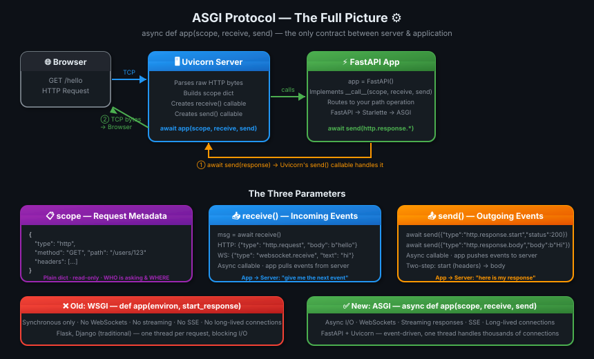

05 · ASGI Protocol — The Contract That Makes It All Work 🔌#
🎯 One Line#
ASGI is a simple contract: "If you're an app, expose
async def __call__(scope, receive, send). If you're a server, call it." — that's the entire protocol.
🖼️ The Picture#

💡 Analogy: ASGI ek power socket jaisa hai. Socket ka standard fixed hai — 3 holes, fixed shape. Koi bhi plug usme fit kar sakta hai — Uvicorn banega socket, FastAPI banega plug. Dono ko ek doosre ke baare mein kuch nahi pata, sirf standard contract pata hai. ⚡
🧱 Key Concepts#
| Term | Kya hai | Remember |
|---|---|---|
| ASGI | Async Server Gateway Interface — a protocol/contract between server and app | Interface, not a library |
| WSGI | Older synchronous version — def app(environ, start_response) |
No async, no WebSockets |
| Uvicorn | ASGI server — handles TCP, HTTP parsing, calls your app | The socket |
| Gunicorn | Process manager — can use Uvicorn as worker class for multi-core | Gunicorn manages, Uvicorn serves |
| Starlette | ASGI framework/toolkit — routing, middleware, WebSockets, responses | FastAPI is built on this |
| FastAPI | ASGI application built on Starlette — adds validation, docs, DI | Plug that fits the socket |
| scope | Dict of request metadata (type, method, path, headers) | "The envelope" |
| receive | Async callable — app reads incoming events from server | "Inbox" |
| send | Async callable — app sends outgoing events to server | "Outbox" |
⚡ WSGI vs ASGI — Why We Needed a New Protocol#
graph LR
subgraph WSGI ["Old WSGI (sync)"]
WA["def app(environ, start_response)"]
WA --> WL["❌ No async"]
WA --> WW["❌ No WebSockets"]
WA --> WS["❌ No streaming"]
WA --> WLL["❌ No long-lived connections"]
end
subgraph ASGI ["New ASGI (async)"]
AA["async def app(scope, receive, send)"]
AA --> AL["✅ Full async/await"]
AA --> AW["✅ WebSockets"]
AA --> AS["✅ Streaming responses"]
AA --> ALL["✅ SSE, long-lived connections"]
end| Feature | WSGI | ASGI |
|---|---|---|
| Sync support | ✅ | ✅ |
| Async support | ❌ | ✅ |
| WebSockets | ❌ | ✅ |
| Server-Sent Events | ❌ | ✅ |
| Streaming responses | ❌ | ✅ |
| Examples | Flask, Django (classic) | FastAPI, Starlette, Django 4+ |
💡 Why Flask can't do WebSockets natively: Flask is WSGI — it's built on
environ/start_responsewhich is a synchronous, one-shot call. No concept of "keep the connection open and send events." ASGI'sreceive/senddesign makes this trivial.
🔬 The ASGI Contract — 3 Parameters#
The entire ASGI application interface is one async callable:
1. scope — Request Metadata Dictionary#
# HTTP request scope
{
"type": "http", # "http" | "websocket" | "lifespan"
"method": "GET",
"path": "/users/123",
"query_string": b"page=1",
"headers": [
(b"content-type", b"application/json"),
(b"authorization", b"Bearer token123"),
],
"server": ("127.0.0.1", 8000),
}
Think of scope as the envelope — it tells you everything about the incoming request before you've read the body.
2. receive() — Read Incoming Events#
# App calls this to read the request body
message = await receive()
# HTTP request body event:
{
"type": "http.request",
"body": b'{"name": "Ayush"}',
"more_body": False # True if more chunks coming
}
# WebSocket incoming message:
{
"type": "websocket.receive",
"text": "hello from client",
"bytes": None
}
receive is pull-based — the app asks for events when it needs them. The server doesn't push.
3. send() — Write Outgoing Events#
# Step 1: Send response headers FIRST
await send({
"type": "http.response.start",
"status": 200,
"headers": [
(b"content-type", b"text/plain"),
(b"content-length", b"10"),
]
})
# Step 2: Send response body
await send({
"type": "http.response.body",
"body": b"Hello ASGI",
"more_body": False # True if streaming more chunks
})
⚠️ Order matters:
http.response.startMUST come beforehttp.response.body. Think of it as: headers first, then content — same as real HTTP.
🍔 The Minimal ASGI App (Pure, No Framework)#
# main.py — zero dependencies, pure ASGI
async def app(scope, receive, send):
# Ignore non-HTTP connections
if scope["type"] != "http":
return
# Send headers
await send({
"type": "http.response.start",
"status": 200,
"headers": [
(b"content-type", b"text/plain")
]
})
# Send body
await send({
"type": "http.response.body",
"body": b"Hello ASGI"
})
This is the entire foundation FastAPI is built on. Every feature FastAPI adds is just more logic inside this same (scope, receive, send) pattern.
🏗️ What Uvicorn Actually Does#
Uvicorn is the ASGI server — it handles the network side and calls your app. Conceptually:
# What Uvicorn does internally (simplified)
class UvicornServer:
async def handle_request(self, raw_request):
# 1. Parse raw TCP bytes → build scope
scope = {
"type": "http",
"method": "GET",
"path": "/hello",
"headers": [...],
}
# 2. Define receive — lets app read body
async def receive():
return {
"type": "http.request",
"body": b"",
}
# 3. Define send — receives app's response events
async def send(message):
if message["type"] == "http.response.start":
self.write_status_and_headers(message)
elif message["type"] == "http.response.body":
self.write_body_to_socket(message["body"])
# 4. Call your ASGI app — this is the ONLY thing it cares about
await app(scope, receive, send)
The key line:
That's it. Uvicorn doesn't know if app is FastAPI, Django, Starlette, or your own hand-rolled framework. It just needs that callable.
🔗 The Full Stack — How It All Connects#
flowchart TB
B["🌐 Browser / Client"]
B -- "HTTP Request\n(raw TCP bytes)" --> U
subgraph SERVER ["⚙️ Uvicorn — ASGI Server"]
U["Parse bytes\n→ build scope"]
U2["Create receive()\n+ send() callables"]
end
U --> U2
U2 -- "await app(scope, receive, send)" --> FA
subgraph APP ["🚀 Your ASGI App"]
FA["FastAPI / Starlette\nasync def __call__(scope, receive, send)"]
FA --> R["Router matches path"]
R --> H["Handler runs"]
H --> P["Pydantic validation\nJSON serialization"]
P --> SEND["await send(response)"]
end
SEND -- "HTTP Response\n(raw bytes)" --> B| Layer | Role | ASGI Side |
|---|---|---|
| Uvicorn | Network + HTTP parsing | Server |
| Starlette | Routing, middleware, WebSockets | App (framework) |
| FastAPI | Validation, docs, DI | App (on top of Starlette) |
🔧 Uvicorn vs Gunicorn — When to Use What#
Development:
uvicorn main:app --reload
└── Single process, hot reload, simple
Production (single server):
uvicorn main:app --workers 4
└── Multiple Uvicorn workers
Production (recommended):
gunicorn main:app -w 4 -k uvicorn.workers.UvicornWorker
└── Gunicorn manages processes
└── Each worker IS a Uvicorn instance
└── Gunicorn handles: signals, restarts, worker health
| Tool | Role | Use When |
|---|---|---|
| Uvicorn | ASGI server, single process | Dev + simple deployments |
| Gunicorn | Process manager | Production (manages Uvicorn workers) |
uvicorn --workers N |
Built-in multi-worker | Simple production |
gunicorn -k UvicornWorker |
Gunicorn + Uvicorn together | Full production setup |
💡 Gunicorn analogy: Gunicorn is the HR manager, Uvicorn is the engineer. Manager handles hiring/firing/sick days (process lifecycle), engineer does the actual work (serving requests). Production mein HR zaroori hai! 👔
📡 ASGI Supports 3 Connection Types#
graph LR
S["scope['type']"]
S --> H["'http'\nRegular HTTP request/response"]
S --> W["'websocket'\nBidirectional, persistent connection"]
S --> L["'lifespan'\nApp startup/shutdown events"]async def app(scope, receive, send):
if scope["type"] == "http":
# Handle HTTP request
...
elif scope["type"] == "websocket":
# Handle WebSocket connection
# receive() gives: connect, receive, disconnect events
# send() gives: accept, send, close events
...
elif scope["type"] == "lifespan":
# Handle startup/shutdown
# receive() gives: startup, shutdown events
...
This is why FastAPI can do WebSockets while Flask (WSGI) cannot — the protocol itself supports bidirectional events through receive and send.
💡 "Aha!" Moments#
FastAPI's app object IS an ASGI application
app = FastAPI()creates an object withasync def __call__(self, scope, receive, send). So when Uvicorn doesawait app(scope, receive, send)it's callingFastAPI.__call__(). FastAPI is not magic — it's just a class that implements the ASGI interface.
receive and send are what enable WebSockets
WSGI had
environ(metadata) +start_response(one-shot write). No way to keep reading or writing after that. ASGI'sreceivelets you keep listening (await receive()in a loop), andsendlets you keep writing — that's exactly what WebSockets and SSE need.
⚠️ Gotchas#
- ❌ Always send
http.response.startBEFOREhttp.response.body— wrong order = broken response - ❌ Don't block inside
async def app()with sync I/O — freezes the event loop - ❌
scopeis read-only metadata — you can't modify the request through scope - ❌ Uvicorn
--reloadis for development only — never use in production - ❌
gunicornalone is NOT async-capable — you need-k uvicorn.workers.UvicornWorker